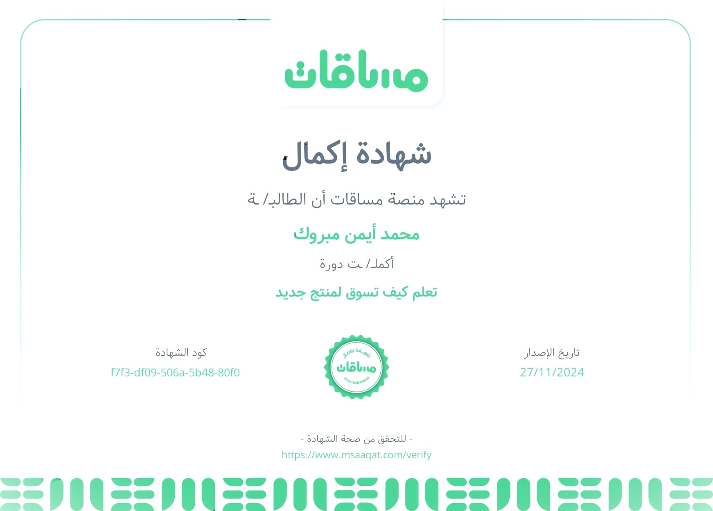
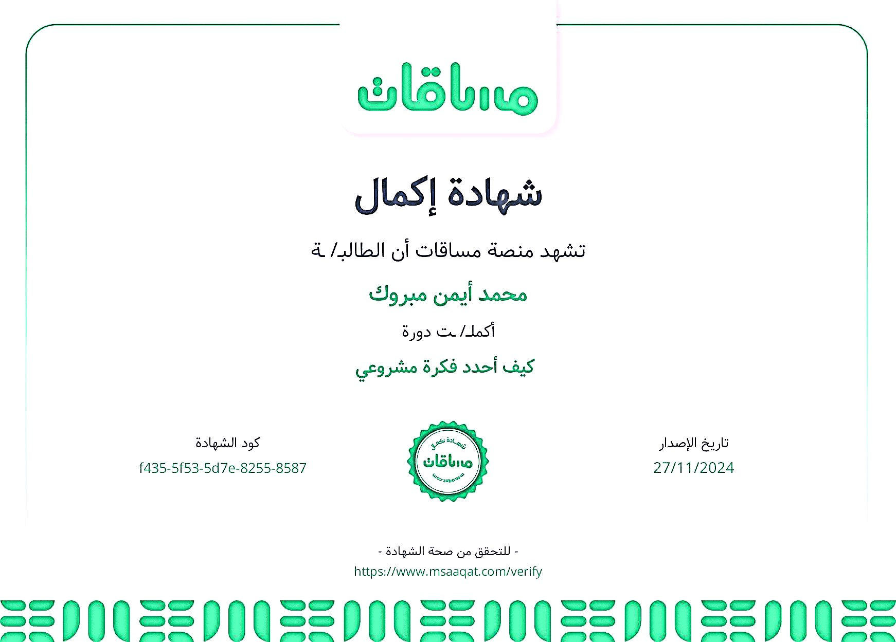

تعلم تسويق المنتجات الجديدة أمر بالغ الأهمية في عصرنا الحالي نظرًا للتغيرات السريعة في الأسواق والتطور التكنولوجي المستمر. أهميته تتلخص في النقاط التالية
الوصول إلى الجمهور المستهدف: التسويق يساعدك في تعريف العملاء المناسبين بمنتجك الجديد باستخدام أدوات واستراتيجيات فعّالة
خلق الوعي بالعلامة التجارية: منتجك قد يكون رائعًا، ولكن بدون تسويق جيد، لن يعرفه الناس. التسويق يضمن ظهور المنتج في السوق
بناء الثقة مع العملاء: التسويق الذكي يركز على إظهار قيمة المنتج وحلوله لمشاكل العملاء، مما يعزز الثقة
تحقيق ميزة تنافسية: الأسواق مشبعة بالمنتجات. تعلم كيفية التسويق يساعدك في إبراز منتجك وسط المنافسة
زيادة المبيعات والإيرادات: مع استراتيجية تسويق فعالة، يمكنك جذب المزيد من العملاء وتحقيق أرباح أكبر
التكيف مع تطورات السوق: تعلم التسويق يساعدك على فهم التغيرات في احتياجات العملاء واتجاهات السوق
توسيع نطاق الأعمال: التسويق يمكن أن يكون بوابتك للدخول إلى أسواق جديدة أو شرائح عملاء مختلفة

تحديد فكرة المشروع هو الخطوة الأولى والأساسية في رحلة ريادة الأعمال، وله أهمية كبيرة تتلخص في النقاط التالية
توجيه الجهود والموارد: تحديد فكرة واضحة للمشروع يساعدك على تركيز وقتك ومواردك نحو هدف محدد بدلاً من التشتت
دراسة السوق بدقة: الفكرة الواضحة تمكنك من فهم السوق المستهدف وتحليل احتياجات العملاء والمنافسين
تجنب المخاطر غير المحسوبة: عندما تكون لديك فكرة محددة، يصبح من الأسهل تحديد التحديات المحتملة ووضع خطط للتعامل معها
جذب المستثمرين: الفكرة الواضحة والمبتكرة تسهل عليك إقناع المستثمرين بدعم مشروعك ماليًا
تحقيق التفرد والتميز: تحديد فكرة مدروسة يمنحك فرصة لخلق منتج أو خدمة تقدم قيمة فريدة للعملاء
توفير الوقت والجهد: العمل وفق فكرة محددة يساعدك على تجنب الأخطاء التي تنتج عن عدم وضوح الرؤية
قياس النجاح: الفكرة المحددة تجعل من السهل قياس مدى تقدمك وتحقيق أهداف المشروع

تخاذ القرارات الاستراتيجية من قبل القيادات في المؤسسات يُعتبر محور النجاح والتقدم لأي منظمة. أهميته تتجلى في النقاط التالية
تحديد الاتجاه العام للمؤسسة: القرارات الاستراتيجية تساعد على وضع رؤية واضحة وأهداف طويلة المدى تعطي المؤسسة هدفًا تسعى لتحقيقه
تعزيز القدرة التنافسية: من خلال اتخاذ قرارات مدروسة، تستطيع القيادة تحديد الفرص في السوق واستغلالها لصالح المؤسسة، مما يضمن تفوقها على المنافسين
التكيف مع التغيرات: القرارات الاستراتيجية تمكّن المؤسسات من مواجهة التحديات الاقتصادية والتكنولوجية بسرعة وفعالية
إدارة الموارد بكفاءة: تساعد القيادات في توزيع الموارد المالية والبشرية بشكل أمثل لتحقيق أكبر عائد ممكن
تحفيز الابتكار والتطوير: القيادة الاستراتيجية تشجع على البحث عن حلول جديدة وتحفيز الابتكار لتلبية احتياجات السوق المتغيرة
ضمان الاستدامة: القرارات الاستراتيجية تركز على تحقيق نمو مستدام وضمان بقاء المؤسسة قوية على المدى الطويل
إدارة المخاطر: اتخاذ قرارات استراتيجية مبنية على تحليل شامل يقلل من تأثير المخاطر ويساعد على الاستعداد للأزمات